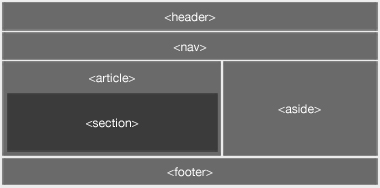
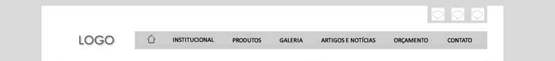

Pequeno guia de front-end para alfaiataria digital
Uma direção seguindo diversas fontes confiáveis da comunidade Front-End no mundo.
Esse guia será atualizado ao decorrer das nossas experiências e tecnologias novas que surgirem.
O projeto está hospedado no Beanstalkapp. Para acessa-lo clique aqui.
Você também pode contribuir:
Agora você pode "commitar" suas contribuições à vontade.
OBS: Caso queria alterar algum conceito do projeto, procure conversar com a equipe antes de efetuar a mudança.
HTML
Informações na tag HEAD
O padrão do head do seu html deve conter as seguintes informações:
<head>
<meta charset="UTF-8"> <!-- Formato de codificação -->
<meta name="viewport" content="width=device-width, initial-scale=1"> <!-- Detectar o tamanho da tela -->
<meta name="description" content="Breve descrição do site" />
<meta property="og:locale" content="pt_BR" /> <!-- Idioma do site -->
<meta property="og:url" content="http://meusite.com">
<meta property="og:title" content="meu site">
<meta property="og:site_name" content="Nome do Site">
<meta property="og:description" content="Breve descrição do site">
<meta property="og:image" content="images/og-image.jpg"> <!-- imagem em post rede social -->
<meta property="og:image:type" content="image/jpeg"> <!-- arquivo da imagem -->
<meta property="og:image:width" content="600"> <!-- /** PIXELS **/ -->
<meta property="og:image:height" content="282"> <!-- /** PIXELS **/ -->
<!-- title -->
<title>Front-End Guideline</title>
<!-- favicon -->
<link rel="icon" href="images/favicon.png" />
<!-- icones do site nos sistemas operacionais mobile -->
<!-- iPhone iOS7-, iPod Touch e Android 2.2+ -->
<link rel="apple-touch-icon" href="images/apple-touch-icon.png">
<!-- css -->
<link rel="stylesheet" href="css/style.css">
</head>
OBS: Evite carregar Javascript no head. Prefira antes do fechamento da tag body.
Semântica
Procure sempre utilizar as novas tags do HTML5 para estrutura de conteúdos:

Exemplo de estrutura
A tag header é bem simples. Todo cabeçalho do seu site deve estar envolvido nele. Pode conter logo, menu, busca e etc.
Para agrupar uma lista de links, temos o elemento nav, que pode ser uma navegação local, ou global. Também pode ser inserida no rodapé do site.
Jamais use a tag p para separar uma lista de itens. Para isso use a tag li.
No caso do section é o mais genérico dos novos elementos. Ele serve para separar departamentos dentro do site. Praticamente será a tag mais usada em cada setor no html.
Diferente do section, o article é uma marcação relevante. Ou seja, um conteúdo que você queira dar um destaque maior. Um artigo de post, feed ou uma chamada principal.
Já o aside geralmente é uma estrutura isolada nas laterais do site. Um bom exemplo é colocar um aside nos blocos de "Posts Relacionados". Também é usado para blocos de propagandas.
Em termos gerais de estrutura, temos por último o footer, que é o rodapé do nosso site. Podendo conter navegação, copyright e outras informações como meios de contato.
Caso você observe figuras no design, procure envolve-lo em uma tag <figure> com ou sem legenda:
<figure>
<img src="figura.jpg" alt="figura ilustrativa">
<figcaption> legenda da foto </figcaption>
</figure>
É importante observar o contexto de imagem no html. Não confunda uma figura, com ícone ou background:
- Ícone é apenas um símbolo que pode estar dentro de uma tag <i> ou <span> pois não têm uma importância semântica.
- Background é apenas uma ilustração que geralmente contém textos e conteúdo por cima. Diferente de uma figura autoexplicativa.
acessibilidade
Sabemos que a Web é para todos, porém existe uma dificuldade em atender de forma correta pessoas com algum tipo de deficiência. Talvez a falta de conteúdo, tutoriais e afins dificultam alguns parâmetros ao inserir nos nossos códigos.
Navegando pela internet em busca de maiores informações acerca disso, achei um site do próprio governo que oferece um curso gratuito de Web Acessível.
Você vai encontrar regras de marcação, como o uso correto dos níveis das tags <H1> em diante, e também sobre toda a estrutura semântica para leitores de telas (principalmente para deficientes visuais).
CSS
SASS
É um pré-processador css que ajuda muito na produtividade.
Com o sass você pode criar variáveis, funções, loops e muito mais.
Para utiliza-lo basta acessar a página oficial e seguir as informações de instalação de acordo com seu S.O.
OBS: No momento da instalação do Ruby, habilite a opção de PATH. Isso faz com que você possa utilizar o próprio terminal do windows para a chamada do SASS.
Crie duas pastas, sendo uma SASS e outra CSS na raiz do projeto. Após a criação das pastas continue na raiz do projeto e inicie o SASS acionando a tecla CTRL e ao mesmo tempo o botão direito do mouse. Clique na opção Abrir janela de comando.
Feito isso faremos um comando para "assistir" nossas modificações no SASS, e automaticamente compilar nosso CSS:
sass --watch sass/style.scss:css/style.css
Caso você queira minificar o css no final do projeto, basta adicionar:
Na alfaiataria utilizaremos a extensão .scss ao invés da .sass, pois a primeira permite a sintaxe do CSS normalmente no código.
Ao utilizar variáveis, prefira não colocar valores da propriedade css. Exemplo: $color-black:#000;
Se um dia essa cor for alterada (acontece muito), você terá que mudar o nome da variável.
Prefira algo como: color-primary, color-1, color-default e etc.
Cuidado com vícios no uso do extend, ou includes dos mixins.
Extend só deve ser utilizado na sua classe, caso tenha a mesma familiaridade. Exemplo:
No exemplo acima, percebe-se que os dois são botões, porém com alguma modificação. Neste caso o uso do extend é válido. Porém extender uma classe .box dentro de uma classe .btn não é uma boa prática.
Geralmente usamos mixin para reutilizar blocos css (esses podem ser incluídos em qualquer classe do código), passando parâmetros onde os valores podem ser alterados:
Para facilitar nossa vida, temos um site chamado Bourbon, que possuem uma biblioteca de mixins que podem ser incluídos a qualquer momento na sua folha de estilos.
Com ele você não vai mais precisar inserir prefixos CSS, como webkit, moz, ms e afins. E também conta com diversos mixins para facilitar a escrita. Baixe e leia a documentação.
Outra funcionalidade interessante do SASS, é a forma como você pode organizar seu CSS em blocos. Por exemplo: _header.scss, _footer.scss, _grid.scss e _reset.scss. Observe que cada um precisa ter um underline antes do nome, pois no arquivo style.scss, você usará um @import que vai inserir estes estilos no arquivo final style.css. É ideal fazer isso por uma questão de performance, até a adesão total do HTTP 2.0.
Grid CSS
Vamos utilizar o conceito de grids do Bootstrap, com uma inserção do Flexbox.
Ele usa como padrão o grid do Bootstrap, mas deixando um pouco mais moderno na utilização do flexbox.
Uma das outras vantagens é a utilização do SASS, dando um pouco mais de liberdade na utilização de variáveis e mixins nos controladores do grid.
Lembrando que o flexbox só funciona a partir do IE10. Caso algum projeto tenha necessidade de suporte a versões anteriores, utilize o grid do bootstrap 3.
OBS: Não vamos utilizar o framework bootstrap completo, usaremos apenas o conceito de seus grids.
Utilizar medidas relativas, como em ou rem ajudam na agilidade do processo de um site responsivo.
Você pode configurar uma seção do site que agrupa títulos e textos (podemos dizer a div pai) e especificar font-size de 2em para ela. Em determinada resolução no seu media query altere para 1.5em e todos os textos filho dessa seção irão diminuir automaticamente.
No SASS você pode inserir uma media query dentro da própria classe:
Isso facilita a manutenção, não precisando buscar um arquivo responsive.css por exemplo, e procurar pela class.
Com o grid flexbox você pode estruturar o layout com classes diretamente no seu HTML. Por exemplo, colocar um menu na direita no desktop (end-md) e centralizado quando mobile (center-xs).
Caso o elemento seja do tipo block, e você queira centralizar no mobile, use o middle-xs. O center-xs é apenas para elementos inline ou inline-block.
Temos também a opção de class hidden e visible. Essas propriedades respectivamente servem para esconder e exibir elementos. Não esqueça de inserir a resolução na nomeclatura (hidden-xs, hidden-ms).
Diversos tipos de alinhamento, já estão no GRID baixado anteriormente, apenas consulte a documentação para inserir no seu HTML.
Lembrando que ele é feito em Mobile First, então prefira iniciar o projeto da menor resolução para maior.
Arquitetura CSS
Problemas recorrentes em CSS fez com que surgissem diversos padrões de arquitetura: BEM, SMACSS, OOCSS entre outras.
Na Alfaiataria vamos optar pelo uso do BEM. Leia a documentação para entender os conceitos da arquitetura.
De acordo com o BEM, um modificador é feito por um único undesrcore (class="btn_colorful"). Na Alfa vamos modificar esse padrão para dois traços (class="btn--colorful") para diferenciar um pouco sobre a forma que ele trata elementos filhos (class="header__btn").
Um block é uma estrutura independente dentro do site. O Element é totalmente descendente e dependente do block. E o modifier define uma alteração de estado ou aparência do Block ou Element. Vamos analisar o seguinte wireframe:

Imagem por: cosmodesign.wordpress.com
Temos um bloco header, com logo e menu. Podemos dizer que o Logo e o Menu mesmo dentro do bloco header, podem ser considerados blocos individuais. Já a lista de itens dentro do menu são elements dependentes do seu bloco.
Observe no header que o menu flutua a direita. Estilizar um bloco menu (.menu) com o float:right não seria bom, pois essa estrutura individual pode estar em outros locais do site. Então o ideal é também inserir uma classe .header__menu e colocar a propriedade CSS nesta classe.
No caso de um bloco de redes sociais, ele pode estar em outro local do site, porém com a cor de fundo alterado. Podemos aproveitar a mesma classe, mas utilizando o conceito modifier do BEM:
Outro fator interessante é que o BEM não utiliza aninhamento no CSS. Ele cria classes para ir direto ao ponto, ao invés de fazer o browser mapear os valores para a estilização.
// sem BEM
.pai{
color: #fff;
}
.pai .filho{
color: #000;
}
// com BEM
.pai{
color: #fff;
}
.pai__filho{
color: #000;
}
Tem uma palestra no BrazilJS muito interessante do Bernard de Luna (desenvolvedor front-end que já foi Team Leader de produto na Petrobras) que fala sobre performance em CSS, utilizando os mesmos recursos do BEM (apesar dele não utilzar por achar a nomeclatura complicada).
Na palestra ele mostra ferramentas de testes que declaram classes aninhadas com pior desempenho na renderização do navegador. E também o quanto eles podem prejudicar a manutenção do projeto.